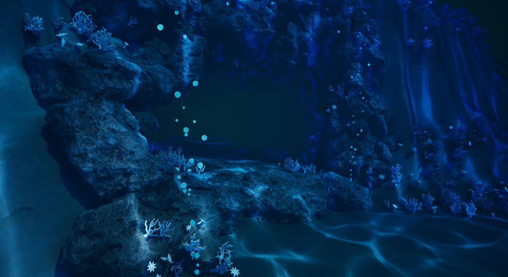
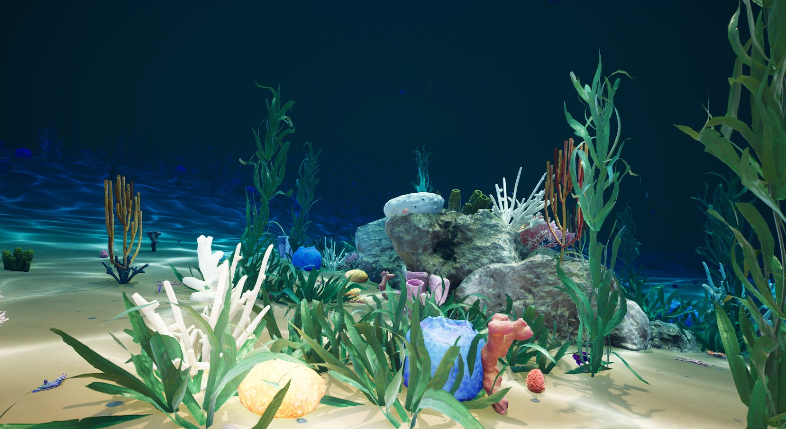
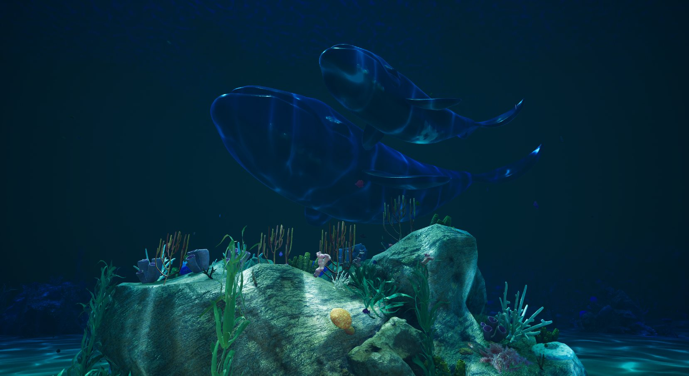

Environment Lead: Coast Quest
A Fortnite island built with Georgia Conservancy and the National Marine Sanctuary Foundation to build empathy for marine ecosystems, letting players explore Gray's Reef National Marine Sanctuary while learning real conservation science.



My role
Lead Environment Artist, directing a 4-person art team (concept artists and 3D modelers). I managed the team's pace and did the research to keep our reef scientifically accurate.
- Led and managed a 4-person environment team
- Modeled and textured invertebrates and coral
- Directed environment layout for exploration and pacing
- Balanced scientific accuracy with fun, playable design
Research first
Before building anything, our team visited Gray's Reef's museum in Savannah to see real coral and invertebrate references and get scale right.

Concepting the world
With size and species references locked in, our concept artists designed the reef and a lobby: a marine research station on a salt marsh, where players board the KitJones to head out to the reef.

Assigning tasks
After getting some concepts started, I made a list of models and sprites and tracked what stage of the process each model was at, so the whole team stayed organized.


Building the mockup
I hadn't used UEFN before, but it's close enough to UE5 that the transition was fast. I blocked out the reef layout while models were still in progress, and built a mockup to test how the models would look underwater.


The lobby
While I designed the main level where Gray's Reef would be, the team built the research station, leaning on Fortnite's existing asset library so we could put our energy into the reef, where players spend most of their time. A few of the lobby assets were modeled by our team.


Presenting to the client
I was one of the main speakers, walking the client through our process and the creatures the team modeled. The feedback was great, and it earned us a second museum trip, this time with live, interactive animals to add detail and life to the final build.

Final polish
After the feedback we started a sprint for the last weeks. Since we're all students juggling this project alongside other coursework, finding time was difficult, so I made it easier by creating a task list so people could stay on track.

Before and after
I felt the reef looked very bare, and I didn't like how the darker grey rocks read underwater. I wanted a look that matched that setting better, so I hand placed additional rocks to build up the formations, then used the foliage tool to add sponges and coral on top, which made a big difference.

We also got feedback that the lobby's lab looked empty, so the environment team made it feel more like one of the museums we'd visited.

Final stretch
As we approached the end of the project, we had a few final goals for our final presentation and demonstration.


Final
We're proud of how the project came together. We worked hard to create something educational, fun, and accurate for everyone to experience. Learning a new engine and leading a team was a great experience for me. Throughout the project we received feedback and grew from it, both in the game itself and in our presentations.